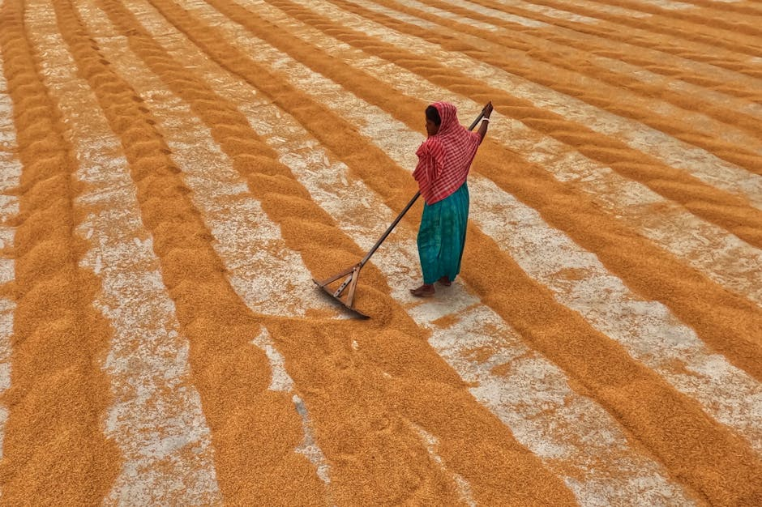

Supporting food security and climate change adaptation: AI-powered crop disease identification for maize, tomatoes, pepper in Ghana

This dataset helps to build and improve crop disease detection systems for smallholder farming in Ghana and similar West African contexts. It covers three crops -- tomatoes, pepper and maize -- with 22 disease and health classes in total, making it one of the more comprehensive Afrocentric crop disease image collections available. The data was collected in 10 districts of the Ashanti Region of Ghana by the RAIL-KNUST team and the Plant Protection and Research Services Directorate (PPRSD) of the Ministry of Food and Agriculture. A 3-month long data challenge was hosted on Zindi based on this data set and the 3 winning models are also available as open source resources to serve as your base models in your research into crop diseases in Ghana.
Data characteristics
[Auto-enriched from linked project resources]
Afrocentric crop disease dataset by Responsible AI Lab. Contains annotated leaf images showing healthy specimens and disease-affected leaves at various crop development phases. Data Type: Image. Size: ~20 GB. License: CC BY 4.0. Version 16 (last modified March 2025). Created with a focus on African agricultural diversity.
Source: https://www.kaggle.com/datasets/responsibleailab/crop-disease-ghana
Also see here for the Zindi challenge: https://zindi.africa/competitions/ghana-crop-disease-detection-challenge
Model characteristics
[Auto-enriched from linked project resources]
Crop disease identification application using computer vision and deep learning on annotated leaf images from African crops. Input: leaf images. Output: disease detection and classification. Dataset created by Responsible AI Lab in collaboration with the Plant Protection and Research Services Directorate (PPRSD) of Ghana's Ministry of Food and Agriculture. Dataset openly available under CC BY 4.0.
Source: https://www.kaggle.com/datasets/responsibleailab/crop-disease-ghana
How to use
[Auto-enriched from linked project resources]
This dataset is intended for building and improving crop disease detection systems for smallholder farming in Ghana and similar West African contexts. It covers four crops --tomatoes, pepper and maize -- with 22 disease and health classes in total, making it one of the more comprehensive Afrocentric crop disease image collections available.
You can use this dataset to train image classification models that identify specific diseases from leaf photos. With nearly 25,000 raw images captured from local farms in Ghana (October-December 2022), plus over 100,000 augmented images with a ready-made train/test split, the dataset is structured for direct use in standard image classification workflows. The raw images are also available separately if you prefer to apply your own augmentation or splitting strategy.
The dataset is particularly valuable because it captures disease symptoms as they actually appear on farms in Ghana -- subtle, at various stages, and under real field conditions. This makes models trained on this data more likely to perform well in practical agricultural advisory tools than models trained on laboratory images. Agricultural technology developers, extension services, and research institutions can use it to build mobile apps or decision-support tools that help farmers identify and respond to crop diseases early.
Researchers can extend this work by combining it with other crop disease datasets to improve cross-regional generalization, or by adding whole-plant and field-level imagery to complement the current leaf-level focus. The dataset is licensed under CC BY 4.0 and is available on Kaggle (approximately 20 GB). A free Kaggle account is required for download.
Known limitations: The images are from specific farming regions in Ghana, so models trained exclusively on this data may not generalize well to crops grown under different conditions elsewhere. The dataset focuses on leaf-level symptoms and does not include whole-plant or field-level imagery.
Source: https://www.kaggle.com/datasets/responsibleailab/crop-disease-ghana
Datasets
Use cases
Additional resources
About
Powered by / Provided by: Kwame Nkrumah University of Science and Technology (KNUST), Responsible AI Lab (https://rail.knust.edu.gh/), Plant Protection and Regulatory Services Directorate (Ghana)
Catalyzed by: FAIR Forward - AI for All, GIZ (https://www.bmz-digital.global/en/overview-of-initiatives/fair-forward/), Digital Transformation Centre Ghana, GIZ
Financed by: BMZ (https://www.bmz-digital.global/en/digital-transformation-and-development-cooperation/)
Authors: Elikplim Sabblah, Mary Seiwah Afram
Contact: Responsible AI Lab (RAIL) at Kwame Nkrumah University of Science and Technology (rail@knust.edu.gh)